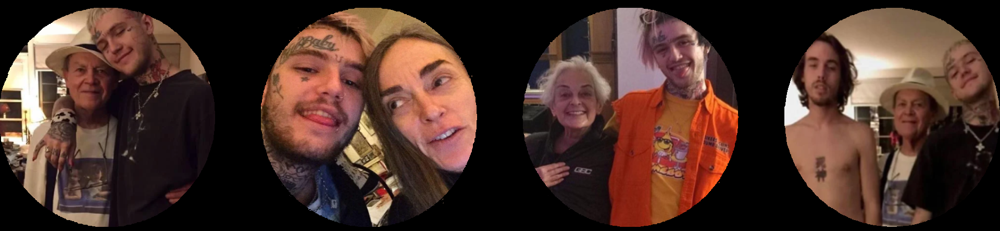

Lil Peep tem como seu nome verdadeiro Gustav Elijah Åhr, e nasceu em 1 de novembro de 1996, em Allentown, mas passou a maioria de sua vida em Long Island, descrito pelo mesmo, "o lugar mais merda de todos". Aos 14 anos, seus pais se separaram, e assim Peep foi criado apenas pela sua mãe, seu avô e sua avó, e seu irmão mais velho, Oskar. Depois da separação, Lil Peep nunca mais teve uma relação boa com seu pai.
Em grande parte de sua adolescência, Lil Peep ficou trancado em seu quarto, pois ele não gostava de socializar com as pessoas de Long Island, já que considerava os adolescentes de sua idade "estereotipos de estudantes de ensino médio do cinema." . Por causa disso, conforme o tempo se passava ele se tornava ainda mais antisocial.
Ele fez sua primeira tatuagem por volta da sétima ou oitava série, porque não se importava mais com a escola. Isso fez com que pais de colegas de classe de Peep dissessem para os filhos não ficarem perto dele, pois no olhar dos pais, Peep era uma má influência.
No décimo ano, Gustav decidiu abandonar a escola, e terminar seu ensino médio em um curso online onde era apenas necessário mandar uma redação por semana, as quais eram feitas por sua própria mãe, conforme Gustav comentou em um documentário.
Sua relação com a escola foi tão traumática, que na opinião de Peep, a única coisa que aprendeu foi que "a maioria das pessoas são babacas.".
Como apenas ficava em seu quarto e não conversava com ninguém, a mãe de Peep, Liza Womack, conversou com o pai de Peep para colocá-lo em um terapeuta, mas Peep sempre acabava fugindo, pulando da janela do segundo andar de seu quarto.
No tempo em que Lil Peep ficava trancado em seu quarto, ele jogava jogos como Skyrim e escutando rap e músicas punk. Ele viu tantas pessoas criando carreiras na internet, que o inspirou a fazer o mesmo.
Fotos de membros da família de Peep que ele considerava importantes.
Respectivamente, seu avô, sua mãe, sua avó e seu irmão.
Com várias pessoas crescendo no Soundcloud e criando suas carreiras independentes, Gustav decidiu tomar o mesmo rumo e começar a produzir suas músicas.
Ele escolheu o nome de ''Lil Peep'' pois desde que era pequeno, sua mãe sempre o chamava de Peep.
Com 17 anos, ele tatuou um coração partido em seu rosto, pois com esta tatuagem, ele não arranjaria um emprego fixo, e então teria que realmente se dedicar à música, já que era o que o fazia feliz.
Ainda com a idade de 17 anos, ele se mudou para Califórnia, morando com seu amigo Brannon Savage. Lil Peep comentou que ele não tinha muita certeza do que iria fazer, mas tinha certeza de onde queria chegar: se tornar um artista famoso.
Ao chegar na Califórnia, Liza enviava comida enlatada para Peep, enquanto ele passava a noite toda produzindo músicas e no período do dia, dormindo. Depois de um tempo, ele lançou sua primeira mixtape: lil peep part one.
Ele percebeu que suas músicas estavam recebendo um feedback positivo, e que as pessoas estavam gostando de suas músicas, assim ele continuou a produzir mais músicas e a ganhar mais espaço nesse mundo da música em que ele estava se inserindo.
Depois de terminar seu álbum de estreia "Come Over When You're Sober pt.1", Lil Peep embarcou em sua turnê de estreia. Sem sucesso nenhum e sem nenhuma produtora, Lil Peep fez seu primeiro show, e mesmo estando nas circunstâncias em que ele se encontrava, ele conseguiu esgotar todos os ingressos de todos os shows que ele deu, com milhares de pessoas tomando parte dos eventos.
Ao sair da sua zona de conforto, Lil Peep conseguiu chegar onde queria, e se tornou um dos mais importantes rappers da nossa geração. Quando mais jovem, ele ouvia muitas músicas com temáticas tristes, depressivas, melancôlicas, que ajudaram ele a superar seus problemas, e isso se tornou mais um dos motivos para ele continuar com suas músicas: ajudar aqueles que se encontram no mesmo estado que ele se encontrava. Criando música, ele também se ajudava, pois a música o tirou de diversos problemas, como vício em drogas, depressão, tendências suicidas, entre outras coisas.
Analisando documentários que Lil Peep participou, podemos perceber que ele nunca fala tão profundamente sobre seus sentimentos como fala em suas músicas. Lil Peep sofria com uma depressão profunda, causada por diferentes motivos que acabavam se juntando e o afetando. Em uma entrevista, Lil Peep disse que sempre ia para o Twitter expressar, por meio de posts, seus sentimentos, como por exemplo no tweet a seguir:

Sua explicação para este tweet específico foi: "Quando você começa a crescer como artista, isso se transforma em algo a mais que um trabalho e te consome muito mentalmente."
Vendo sua fama subir, um rapper chamado Craig Xen, membro do grupo Schemaposse, o convidou para participar deste grupo. Um dos membros deste grupo se chama Ghostemane, um rapper que continua famoso até hoje.
Porém, Lil Peep não ficou por muito tempo no grupo. Ele foi apresentado para Tracy e Horsehead, membros do grupo GothBoiClique, em um encontro em sua casa, e eles simplesmente convidaram Lil Peep para se tornar parte da GothBoiClique. Um dos motivos do porquê ele aceitou foi o fato que seus tipos de música e as músicas que as pessoas do grupo produziam se combinavam muito bem.
Logo no primeiro dia de seu encontro, Lil Peep e Tracy já criaram uma música que ganhou muita fama na época, "white tee". Ao olhar de muitas pessoas, incluindo os membros da GBC, os dois formavam uma química perfeita, porém a amizade não durou por tanto tempo, pois Tracy se afastou de Lil Peep, justificando que ele não poderia ser uma sombra de Lil Peep, e que se sentia estranho quando a mídia apenas citava o nome de Lil Peep, quando os dois haviam escrito e cantado as músicas juntos.
Em uma parte de sua carreira, Lil Peep foi modelo para algumas agências, pois também possuia o sonho de poder estabelecer sua própria marca de roupa.. No vídeo abaixo, em alguns momentos podemos encontrar-lo:
Por causa de sua depressão e ansiedade, Lil Peep consumia a droga Xanax para se sentir melhor, e isso desde quando tinha 17 anos. Antes de cada show, para poder continuar sua perfomance sem sua fobial social lhe atacar, ele também fazia o uso de drogas. Contudo, quanto mais ele utilizava drogas, mais dependente se tornava.
Lil Peep não era feliz consumindo drogas, ele apenas as usava para ter um jeito de fugir de todos os problemas que o assombravam; da depressão que o consumia por dentro. Em uma entrevista, Lil Peep confessou que costumava abusar muito de drogas, tomando por dia aproximadamente 20 pílulas, e tendo convulsões durante o sono. Ao passar do tempo, Lil Peep começou a ter mais controle, tomando apenas uma pílula caso se sentisse nervoso.
Quando perguntado se já passou por overdose, ele respondeu: "Sim, diversas vezes. Eu quase morri todas as vezes."
No dia 15 de Novembro de 2017, duas semanas antes de seu aniversário, Lil Peep faleceu devido uma overdose por conta de Xanax misturada com Fentanyl, uma droga cem vezes mais forte do que a heroína. Neste mesmo dia, Lil Peep fez diversas postagens em suas redes sociais. Em todas as postagens, Lil Peep demonstrava bastante emoção, mas a postagem que mais chamou atenção foi a seguinte:
Uma das suas últimas postagens foi um vídeo onde a música de fundo era praying to the sky, sua primeira música de sua primeira mixtape, mas no contexto, se comparava a uma despedida.
Sua última postagem foi uma foto de algumas fãs suas, e isto mostra que mesmo com tudo o que ele estava passando, ele ainda tentava continuar positivo, nunca esquecendo os outros ao seu redor.